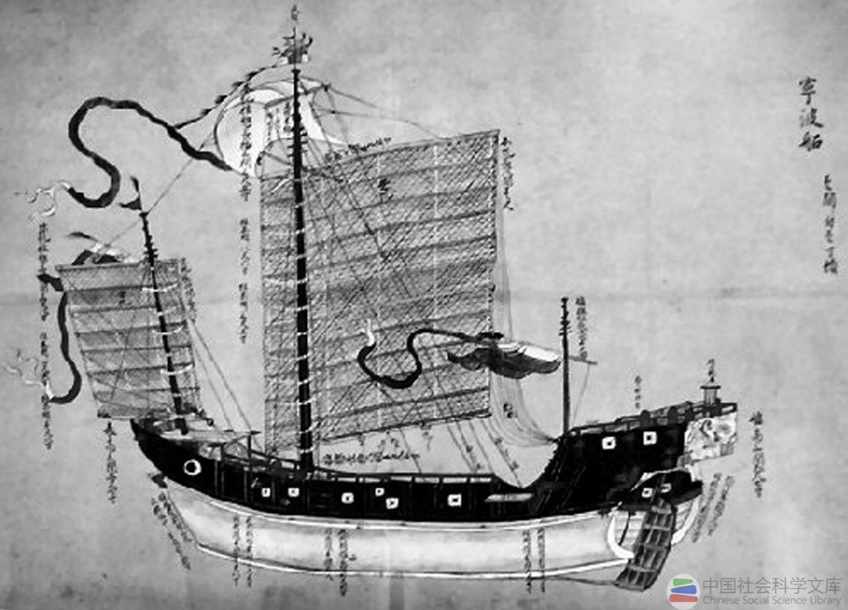

唐渤海国（698年一926年），是我国东北地区一个新兴的以粟末靺鞨族为主体建立起来的、臣属于唐朝的地方政权。 靺鞨即我国东北固有少数民族肃慎（挹娄、勿吉）的后裔，满族之先祖，其疆域约北至松花江流域，东北至今伯力东北，东至日本海， 西至松花江与嫩江合流处，南至大蒲石河河口以南。
唐船图所绘之宁波船
据《渤海国志》所载，从唐神龙元年(705年)至开成四年（853年），渤海国遣使入唐即达40次之众。 而唐朝政府也屡派使节前往渤海国，其中较为著名、且有文物可考的是崔忻与张建章二人。开元元年(713年)，受唐册封为震国公的粟末靺羯首领大祚荣遣王子入唐通聘。 同年，为加强对东北的控辖与维护民族和睦，唐玄宗遣郎将崔忻以“救持节宣劳靺羯使”名义，从长安出发，经山东半岛，渡渤海海峡至辽东半岛， 转樯东驶，再溯鸭绿江至“旧国”（今吉林省敦化敖东城），册封大祚荣为渤海郡王，亦称渤海都督。出是“去靺羯号，专称渤海”。开元二年(714年)， 崔忻取海道返回，途经今辽宁省大连市旅顺口区黄金山麓，凿井二口，并刻石为记。刻石铭文为：“救持节宣劳羯使鸿胪卿崔忻井两口，永为纪验，开元二年五月十八日。” 又唐大和六年(832年)，渤海国遣使贺守谦来聘，幽州府遂命张建章以瀛州司马之职答聘。据1956年在北京德胜门外出土的《张建章墓志》介绍， 他于大和七年(833年)“方舟而乐，海涛万里”，于次年秋抵达渤海上京，受到了热情款待。张建章在留渤期间广为交际，书诗问答。大和九年(853年)仲秋，张建章循海载谊复命。